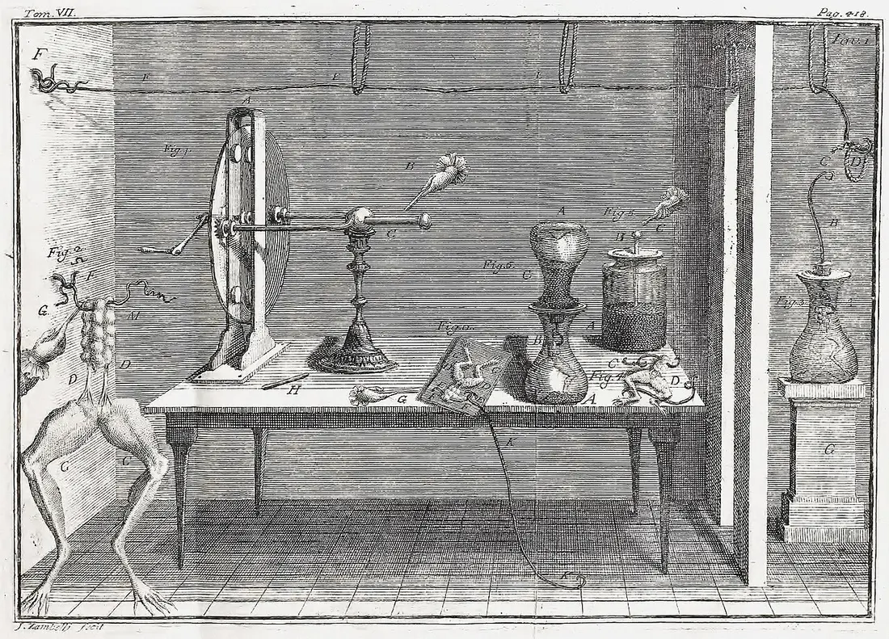
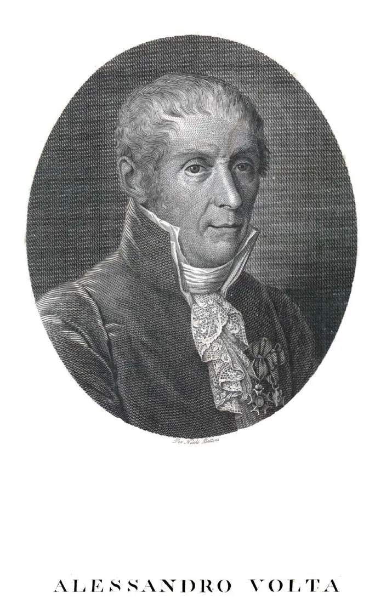
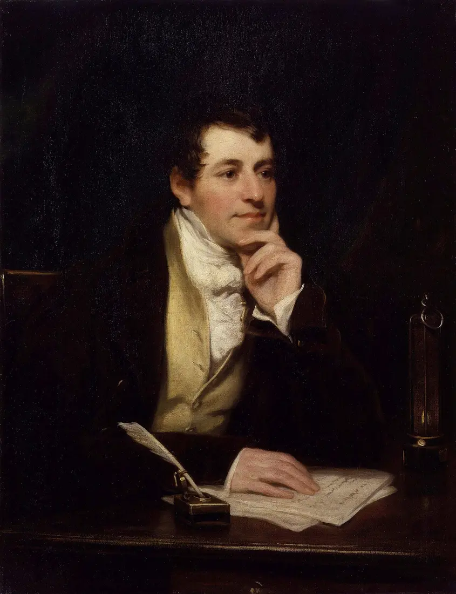
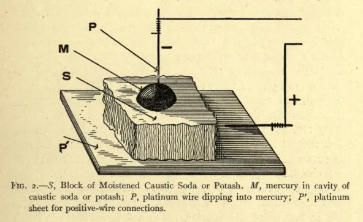
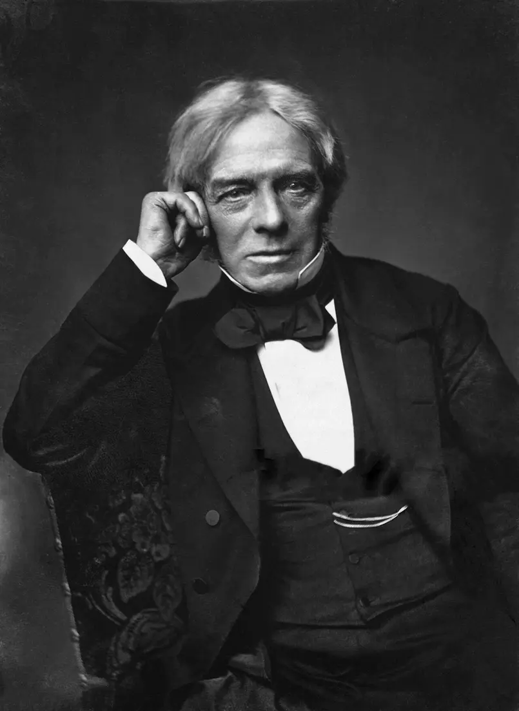
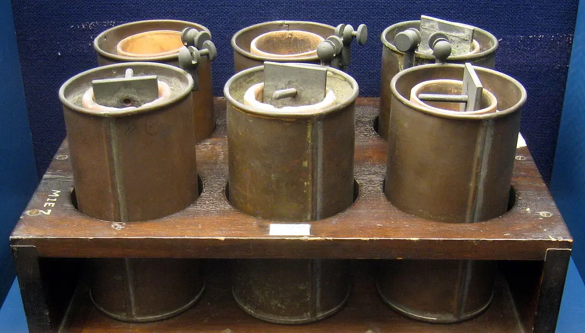
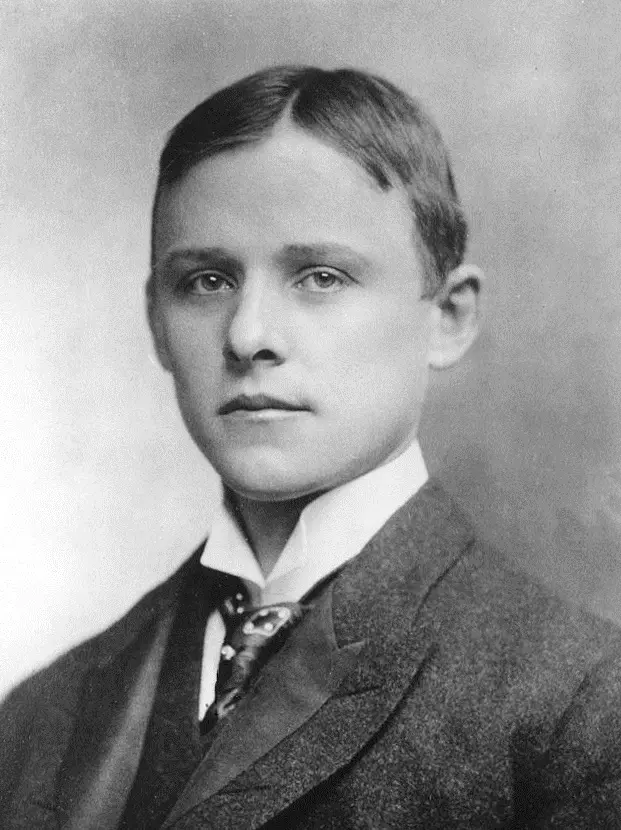
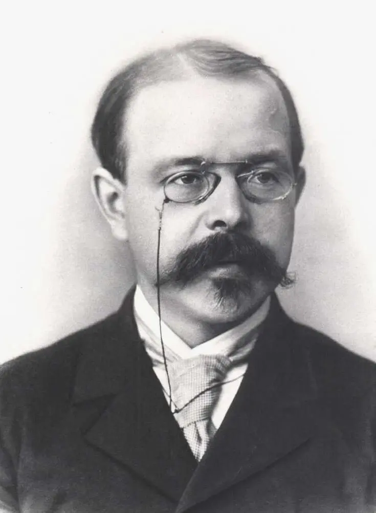
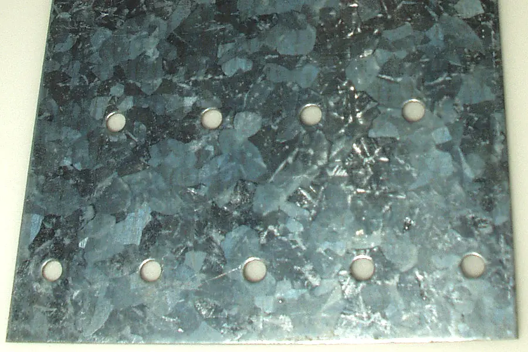

Anode (−)
Zn → Zn²⁺ + 2e⁻
oxidation
Zn → Zn²⁺ + 2e⁻
oxidation
Cathode (+)
Cu²⁺ + 2e⁻ → Cu
reduction
Cu²⁺ + 2e⁻ → Cu
reduction
Chemistry · Lesson 12 · Chemical Systems
Separate oxidation and reduction, follow electrons through a galvanic cell, and test how electrode choice and concentration change the voltage in this model of a battery. Then run it backwards: use current to plate metal.
The story begins with a twitching frog leg and a quarrel between two Italian scientists, and it ends in every phone in this room.
In the 1780s, Luigi Galvani noticed that a dissected frog's leg twitched when touched by two different metals. He concluded the electricity was inside the animal ("animal electricity"). Alessandro Volta disagreed: he suspected the two different metals were making the current and the frog was only a sensitive detector. To prove it, Volta stacked discs of zinc and silver (later copper) separated by brine-soaked cardboard. In 1800 he announced this voltaic pile, the first battery, a steady source of current with no animal needed. Galvani was right that nerves use electricity, and Volta was right about the metals, so both of them were partly right.
Spot the connection: Volta's pile is the cell from section 2, repeated in a stack. Zinc is oxidized, a more noble metal is the cathode, and the wet cardboard plays the role of the salt bridge. The unit of voltage, the volt, is named for him.


Within weeks of Volta's announcement, William Nicholson and Anthony Carlisle used a pile to split water into hydrogen and oxygen, the first electrolysis. In 1807–08, Humphry Davy ran current through molten potash and soda and isolated the metals potassium and sodium for the first time, then calcium, magnesium, strontium and barium. These metals hold their electrons so tightly as ions that no furnace could reduce them; only electricity could. Davy's young assistant was Michael Faraday.


In the 1830s Faraday measured how much substance electrolysis produced and found that the mass deposited is proportional to the charge passed, and that the same charge deposits amounts in proportion to atomic mass divided by ion charge. These are Faraday's laws of electrolysis, the basis of the calculator in section 4. With the scholar William Whewell, he also coined the words we still use: electrode, electrolyte, anode, cathode, ion.

Once the rules were known, engineers made practical cells: the Daniell cell (1836) gave steady voltage for telegraphs, Grove's gas battery (1839) was the first fuel cell, Planté's lead–acid battery (1859) was the first rechargeable one, and Leclanché's cell (1866) became the dry cell. Theory caught up too: Arrhenius explained why salt solutions conduct (they hold ions), and Walther Nernst's 1889 equation, used in section 3, tells how voltage changes with concentration. In 1886, Charles Hall and Paul Héroult independently invented electrolytic aluminium, which dropped aluminium from a jewel-priced curiosity to the foil in your kitchen.



Think about it: Which of these discoveries needed a new tool (the pile) before the new idea could appear? What does that suggest about how science moves?
In a zinc–copper cell, zinc atoms oxidize at the anode and release electrons. Copper ions reduce at the cathode and accept them. The salt bridge keeps charge from building up while the wire gives electrons a path through a load.
Memory aids: OIL RIG — Oxidation Is Loss, Reduction Is Gain (of electrons). AN OX and a RED CAT — anode = oxidation, reduction = cathode. These two names hold in every electrochemical cell; only the +/− signs change (a galvanic cell's anode is −, an electrolytic cell's anode is +).
Where does the energy come from? Electrons "fall" from a metal that holds them loosely (zinc) to one that holds them tightly (copper ions). Voltage measures how big that drop is per coulomb of charge, so a bigger gap in reduction potential means a stronger battery.
Choose any two metals. Each is dipped in a solution of its own ions. The metal with the lower reduction potential becomes the anode.
The math: E°cell = E°cathode − E°anode. With concentrations other than 1 M, the Nernst equation corrects it at 25 °C: E = E° − (0.0592 / n) · log Q, where Q = [anode ion]a ÷ [cathode ion]b (products over reactants). Drag the sliders: more cathode ions or fewer anode ions raises the voltage; at the point E = 0 the cell is at equilibrium and is a dead battery.
Model limits: these are standard reduction potentials under specified conditions. Real battery voltage also changes with temperature, internal resistance, and load, and the model treats concentrations as activities.
Force current through a cell and you drive a non-spontaneous reaction: that is electrolysis, used for electroplating, refining copper, and charging a rechargeable battery. The charge you push sets the amount of metal: Q = I·t, moles of electrons = Q ÷ F, with F = 96,485 C per mole of electrons.

| System | What gets oxidized / reduced | Why it matters |
|---|---|---|
| Alkaline battery | Zn is oxidized; MnO₂ is reduced. | ~1.5 V. Single-use, because the products are not easily driven back. |
| Lead–acid (car) battery | Pb is oxidized; PbO₂ is reduced in sulfuric acid. | ~2 V per cell (six in a 12 V battery). Very large current, and rechargeable. |
| Lithium-ion | Li⁺ ions shuttle between electrodes while electrons take the wire. | High energy per kilogram (phones, EVs). Charging is electrolysis run on purpose. |
| Hydrogen fuel cell | H₂ is oxidized; O₂ is reduced; water is the product. | A galvanic cell that is fed fuel continuously instead of running out. |
| Rusting | Fe is oxidized to Fe²⁺ (then rust); O₂ is reduced. | A galvanic cell nobody wanted, using water as the "salt bridge". |
| Galvanized steel | Zn (E° −0.76 V) is oxidized in preference to Fe (−0.44 V). | A sacrificial anode: zinc corrodes so the iron does not, even where the coating is scratched. |